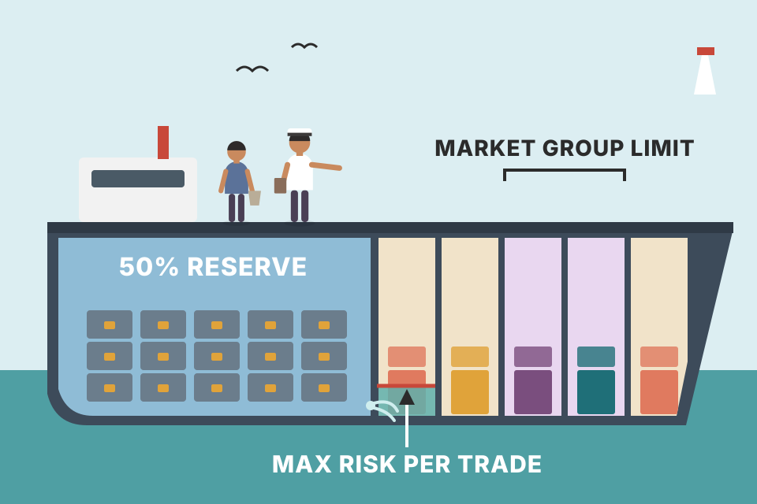
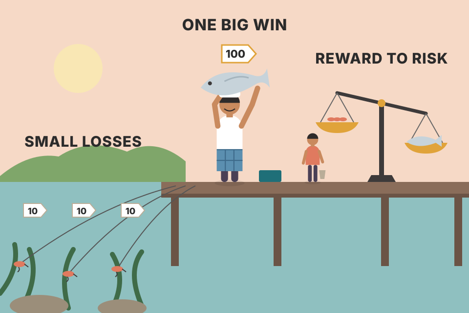
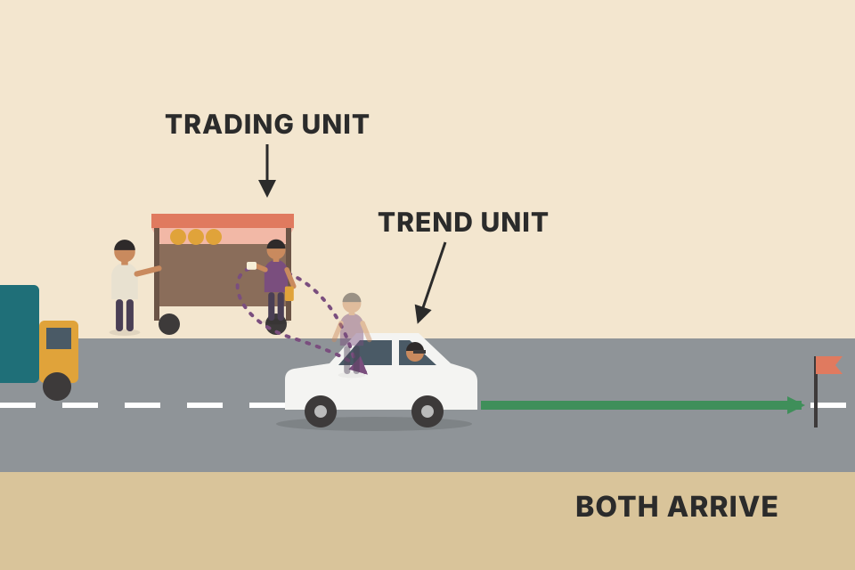
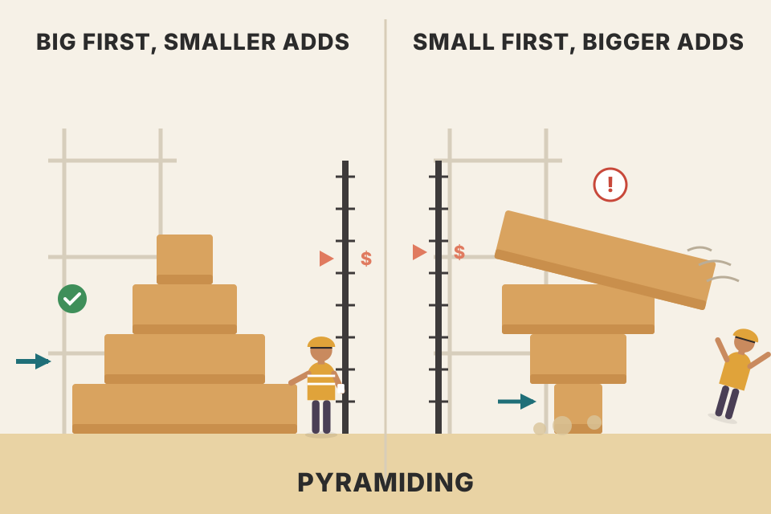

Fifteen chapters taught you how to read a chart and decide which way a market is going. This chapter adds the two things that turn a forecast into a result: how much money to put on the trade, and exactly when and how to get in and out. Every section is here in the book's order, in plain words, with a live simulator next to each rule. All prices and trades on this page are simulated, not real market data.
Murphy splits trading into three jobs. You already know the first one. This chapter is about the other two, and it does money management first because it decides how you'll use the tactics.
The earlier chapters covered market forecasting. Murphy now adds trading tactics (timing) and money management, and says no trading programme is complete without all three:
The short version: forecasting tells you what to do (buy or sell), timing tells you when, money management tells you how much.
Murphy's reason that timing matters most in futures is leverage. A futures position is worth far more than the deposit (margin) you put up, but your profit or loss is on the full value. If margin is 5% of the contract, leverage is 1 ÷ 0.05 = 20×, so every 1% price move is 20% of your deposit.
Worked example. A contract worth $100,000 needs $5,000 margin. You're right that it will go up, but you buy two days early and it first dips 2%. That's $2,000, or 40% of your deposit, gone before the move you predicted even starts, and a stop placed inside that dip would have taken you out. The same 2% dip on a stock bought with cash costs 2%. Same forecast, same market, and only the timing decided whether you survived to see it work. Slide the margin down to see how small the room for error gets.
A road trip. Forecasting is choosing the destination. Money management is deciding how much fuel and money to carry so one breakdown doesn't strand you. Tactics are when you leave and which lane you take. A great destination doesn't help if you run out of fuel on the way.
Murphy spent many years in a brokerage firm's research department, then made the switch to managing money himself, and quickly found how different it is to carry out strategies yourself than to recommend them to others. What surprised him: the hard part wasn't the strategy. The way he analysed markets and picked entries barely changed. What changed was how much weight he gave to money management. The size of the account, the portfolio mix and the amount committed to each trade had a big effect on the final results.
Advisors tell clients what to buy and when; very little is said about how much. Some traders call money management the most important ingredient, even more than the trading method. Murphy isn't sure he'd go that far, but he doesn't think you can survive for long without it. Money management deals with survival: a good trader should win in the long run, and money management raises the odds that you're still around when the long run arrives.
Every path is the same strategy with a real edge, built from Murphy's own numbers in section 06: it wins 40% of the time and each winner is 3 times each loser. Only the slice of equity risked per trade changes. 300 simulated traders, 100 trades each. At a few percent per trade, almost nobody gets badly hurt. Push the slider past 20% and many traders get cut in half even though the strategy has an edge. The edge decides what happens on average; the bet size decides whether you're still in the game to collect it.
With 40% winners, five losers in a row is not bad luck, it's routine: any given five trades are all losers 0.65 ≈ 7.8% of the time, and over 100 trades the chance of at least one such run is about 98% (exact count over all win/loss sequences).
At 5% risk per trade: 0.955 ≈ 0.774, so you have 77.4% of your money left and need +29% to get back. At 20% risk: 0.805 ≈ 0.328, so you have 32.8% left and need +205%. Same strategy, same five trades. The first trader shrugs; the second needs years of good trading just to get back to zero (section 08 shows the recovery curve). Losses compound by multiplication, so the bet size shows up as a power.
Crossing a river on stepping stones. A good strategy means the river can be crossed. Money management is the size of your steps. Leap too far and one slip puts you in the water, no matter how good the route was.
using_equations_to_trade.md Monte Carlo makes the same point with your 51.5% / 2R setup: at 1–2% risk you survive every case, while full Kelly (27.3%) gave a 100% chance of a 50%+ drawdown.Portfolio management can get very statistical. Murphy keeps it simple and gives four guidelines. They're written mainly for futures trading:
These are fairly standard in the futures industry, and you can adjust them: aggressive traders take bigger positions, conservative ones smaller. What matters is some form of diversification that preserves capital and protects you during losing periods. The general principles of money management and asset allocation apply to all investing, not only futures.

A ship with watertight compartments. Half the hull is sealed off as a reserve (T-Bills). No single compartment (market) can hold more than a tenth or so of the cargo, no single leak (stop-out) can let in more than 5%, and compartments next to each other (a market group) share a limit, because when one floods the neighbour usually floods too.
Rules 2 and 3 measure different things. Margin is the deposit you put up; risk is the money you lose if the stop is hit. A trade can pass one and fail the other: try 2 contracts with a $3,000 stop each. The margin is small, but $6,000 at risk breaks the 5% rule. Rule 4 exists because correlated markets act like one big position.
A way to think about it (my framing): the four rules are four independent constraints, like resource limits on a server. Each one caps the number of contracts, and the binding constraint is whichever cap is smallest. Which one binds depends on the trade: a market with a big margin hits rule 2 first; a wide stop hits rule 3 first; a third metals trade hits rule 4 first.
$100,000 account. One contract needs $2,500 margin and loses $1,000 if the stop is hit. You already hold $8,000 of margin in the same group. How many contracts can you trade?
The answer is the smallest: 4 contracts, with $10,000 margin and $4,000 at risk. Now widen the stop to $2,000 per contract: rule 3 drops to 2 and becomes the binding one. In practice you'd work through these in a spreadsheet or a pre-trade script before every order.
using_equations_to_trade.md risks 0.5–1% per trade (fixed-fractional, eq 8 in trading_equations.md). Murphy's 5% is a ceiling per market, not a target; your rule sits well inside it.Diversification limits risk, but it can be overdone. Trade too many markets at once and a few profitable trades get diluted by a larger number of losers. A balance is needed. Some successful traders concentrate on a handful of markets, which is fine as long as those markets are the ones trending. The more negative the correlation between your markets, the more diversification you get. Being long four foreign currencies at once is not good diversification, because foreign currencies usually trend the same way against the U.S. dollar.
Four umbrellas don't keep you drier than one if they're all held over the same head. Diversification is umbrellas spread over different people: one gets wet, the others don't.
Each thin line is one simulated market with the same small edge. The thick line is all of them traded together, equal size. With N markets that each move with correlation ρ, the combined swings shrink to √((1 + (N − 1)ρ) ÷ N) of one market's. At ρ = 0.8 (the "four currencies" button, an illustrative value) four markets are barely calmer than one. With four markets at ρ = 0 the swings halve. Negative correlation shrinks them most, exactly Murphy's point.
Why the formula looks like that (not in the book): the combined swing is the average of N moves. The part each market does on its own (the independent part) partly cancels out as you add markets, like coin flips evening out. The shared part (the ρ part) never cancels, because every market does it at the same time. So as N grows the swings shrink towards √ρ of one market's, not towards zero. With ρ = 0.8, no number of currencies gets you below about 0.89.
Calmer? Four markets: ρ = 0.8 → √(3.4 ÷ 4) ≈ 0.92 (8% calmer than one market); ρ = 0 → √(1 ÷ 4) = 0.50; ρ = −0.3 → √(0.1 ÷ 4) ≈ 0.16.
Too thin? Murphy's warning is about dilution. Say you have $40,000 to trade, split evenly, and in a given period only 3 markets trend. Each trending market earns 30% on its slice; each non-trending one gives back 5% in false starts. With 4 markets ($10,000 each): 3 × $3,000 − 1 × $500 = $8,500, or 21% on the $40,000. With 12 markets ($3,333 each), still only 3 trending: 3 × $1,000 − 9 × $167 = $1,500, or under 4%. The winners are the same; there's just less money on them and more on the losers. That's why concentrating on a few markets works, if they're the ones trending.
Correlations aren't fixed. They're measured on daily returns over some past window, and in sharp sell-offs many markets tend to fall together, so correlations measured in calm periods can rise just when you need diversification. Treat a low measured ρ as a hope, not a guarantee, and keep the per-group limit (section 03, rule 4) even when the numbers say the markets are unrelated.
Murphy strongly recommends protective stops, but placing them is an art: you combine chart levels with money-management limits (section 14 shows how). Consider the market's volatility: the more volatile the market, the looser the stop has to be. Too close, and short-term swings ("noise") knock you out. Too far, and the losses get bigger. The trick is the middle ground.
A smoke alarm. Mount it right above the toaster and it goes off every morning (stopped out by noise). Put it in the garage and the house burns before it notices (huge loss). You place it where normal kitchen smoke doesn't reach but a real fire does.
400 simulated trades that are all "right": the market drifts up. A stop that's hit anyway is pure noise. With tight stops most good trades get kicked out; widen the stop and the noise exits fall fast, but every stop that is hit costs more. Switch to the volatile market: the whole curve moves right, so the same stop distance now gets hit far more often. That's why a volatile market needs a looser stop.
Behind the curve (not in the book): random daily swings add up like a random walk, so the typical distance price wanders from your entry grows with the square root of time. Over 16 days a market with 1.1% daily swings typically wanders about 1.1% × √16 = 4.4%. A 2% stop sits well inside that normal wander, so it gets hit even when you're right. Double the daily swing and the wander doubles too, so the stop must roughly double to keep the same chance of surviving noise.
Futures at 100, each point worth $500 per contract, and you'll risk at most $5,000 (section 03). The market's normal daily range is 2 points.
The dollar risk is the same $5,000 either way. What you're really choosing is how many contracts versus how likely noise is to kick you out. A wider stop doesn't mean risking more money; it means trading fewer contracts. Section 14 makes this the rule.
trading_equations.md) is the usual way to size a stop by volatility. Your weekly pullback uses a 2.5 ATR stop; your Tori trendline rules skip a trade when entry − safety line is more than 3 × ATR (tori_trendlines_explained.md): stop too far = loss too big.Murphy says the best futures traders make money on only 40% of their trades. Most trades are losers. Because futures need so little margin, even a small move the wrong way forces you out, so you may have to probe a market several times before catching the move you want.
With most trades losing, the only way to come out ahead is for the dollars won to beat the dollars lost. So for each trade you set a profit objective (the reward) and compare it with the loss if the trade fails (the risk). A common yardstick is 3 to 1: the profit potential should be at least three times the possible loss before a trade is even considered.
"Letting profits run and cutting losses short" is one of the oldest maxims of trading. A handful of trades a year produce the big profits, so you have to make those few winners as big as possible by staying with persistent trends, and keep the losers small. Murphy notes that many traders do exactly the opposite.

A fisherman who loses three cheap lures for every big fish he lands is still eating well, as long as the fish is worth more than the three lures. Count the money, not the catches.
The curve is the win rate you need just to break even at each reward-to-risk ratio. Anywhere above it makes money. At 3:1 the line sits at 25%, so Murphy's 40% clears it with room to spare. The lower chart shows the price of that: at 40% wins, runs of six, eight or more losses in a row are normal (watch the "longest losing streak" readout as you roll new markets). Add costs and the whole curve lifts.
How long a losing streak should you expect? (not in the book) A standard result for runs in random sequences: over n trades with win rate p, the longest losing streak is typically about log(n × p) ÷ log(1 ÷ (1 − p)), give or take two. At 100 trades and 40% wins: log(40) ÷ log(1.667) ≈ 7. The readout under the lower chart prints this estimate next to the simulated streak. In practice: before you trade a system, work out its normal worst streak and size so that streak costs less than you can stomach. Seven straight 5% losses is −30%; seven straight 1% losses is −7%.
100 trades, risking $1,000 each, 40 winners at 3:1. Winners: 40 × $3,000 = $120,000. Losers: 60 × $1,000 = $60,000. Net +$60,000, or +$600 per trade (+0.6R). Now flip the habit Murphy warns about: cut winners at 1:1 and let losers run to 3:1. Even at 60% winners: 60 × $1,000 − 40 × $3,000 = −$60,000. The win rate is not the scorecard; the ratio is.
strategies_by_timeframe.md, backtest_results_summary.md) is the same line with costs: a scalp at 0.2% target / 0.1% stop needs 77% wins, a 6% / 3% swing only 37%. Your FYERS note's example (₹20 target, ₹10 stop, ₹6 costs) needs 53%, not 33%.trading_equations.md) turns win rate and reward:risk into a maximum bet: f* = p − (1 − p) ÷ b. At 40% and 3:1 that's 20% at risk per trade. Section 02's simulator shows why practitioners use only a fraction of it.Letting profits run is harder than it sounds. A market trends, you have big profits quickly, then the trend stalls: oscillators show overbought and there's resistance on the chart. You think the market has much further to go, but you're worried about losing the paper profits if it fails. Take profits, or sit through a possible correction?
One way out, Murphy says, is to always trade multiple units, split into two kinds.
Avoid trading only one unit at a time; the flexibility of multiple units makes a big difference to results.

Two people in a car on a long trip. The driver (trending unit) keeps going through traffic jams. The passenger (trading unit) hops out at a crowded junction to grab food and hops back in when the traffic moves. They arrive together, but the passenger also got lunch.
Both units buy on the same day. The trending unit's only exit is a loose stop: a close below the lowest low of the last 40 days. The trading unit also sells when price gets stretched above its 20-day average (a simple "overbought" stand-in), then buys back when price closes above the high of the day it sold (the trend resumes). When the stall becomes a deep correction, the trading unit's early sale protects profit; when the trend just keeps going, selling early costs it part of the move. You don't have to choose: you hold both.
Why the two units get different stops. Each unit has a different job, so each fails in a different way. The trending unit's job is to survive corrections and still be there for the big move, so its stop must sit beyond the normal size of a correction; being knocked out early is its failure. The trading unit's job is to bank profit when the market looks stretched, so it accepts being knocked out by a small dip; giving back a large paper profit is its failure. A tight stop is cheap insurance for the trading unit and a disaster for the trending unit.
Two units bought at 100. The market runs to 120, near resistance and overbought. The trading unit sells at 120 (+20). A correction takes price to 108; the trending unit's loose stop at 104 holds. The trend resumes and the trading unit buys back at 112, then both ride to 140.
Neither unit wins every time. Holding both means you never get the worst result of either.
The pooled readout under the chart, read honestly. Over 400 simulated markets of this shape (a long trend with one correction) the trading unit usually earns much less than the trending unit and does better only in a small share of them, because each sale and buy-back gives up part of the move. What it buys is profit banked early, which pays off when a stall turns into a real reversal, and these simulated trends rarely reverse. That's why the idea is to hold both kinds of unit, not to switch everything to trading units: the trending unit earns the big money in trends, and the trading unit is insurance that costs something in every trend that keeps going.
After losing: if your equity is down 50%, you now have to double what's left just to get back to where you started. Do you get more selective, or keep doing what you did? If you turn more conservative, winning back the losses gets that much harder.
After winning (a nicer problem): say you've doubled your money. You could double your position size to use it fully. But then, in the losing period that's sure to follow, instead of giving back 50% of your winnings you'll give back all of them. He adds that the right answers to both questions (what to do after losing, what to do after winning) are not as simple or obvious as they first look.
Murphy's view: every trader's record is a series of peaks and troughs, like a price chart, and it should trend upward if you're making money. The worst time to increase size is after a winning streak; that's like buying an overbought market in an uptrend. The wiser move (which goes against human nature) is to increase commitments after a dip in equity, so heavier positions are taken near equity troughs rather than peaks.
1,000 simulated traders, 200 trades each, all with Murphy's 40% / 3:1 edge. Three sizing habits: constant 2% risk on every trade; after peaks 4% whenever equity is at a new high, else 2% (a stand-in for "size up after a winning streak", not Murphy's literal doubling); after dips 4% whenever equity is 10% or more below its peak, else 2% (Murphy's advice). The slider sets what kind of trader's record you have.
A ₹100 note that shrinks to ₹50 lost half. To get back to ₹100 the ₹50 must grow by another ₹50, which is 100% of what you now hold. The fall is measured on the big starting number; the climb is measured on the small one.
Losses and gains aren't symmetric because the gain is measured on a smaller base. Down L% means you need L ÷ (100 − L) × 100% to recover: 20% → 25%, 50% → 100%, 75% → 300%. The doubling example is pure arithmetic: doubling size doubles the damage of the same bad run. Beyond the book: "add after a dip" leans on Murphy's picture of the equity curve swinging like a price chart. If your trades were truly independent coin flips, the timing of a size change wouldn't change the edge per trade; it mainly protects you from sizing up right before the inevitable bad run.
At 0 on the slider, trades are independent: a dip says nothing about the next trade. Then "after dips" is worse on drawdowns: about a quarter of its traders suffer a 30%+ drop from a peak, versus a few percent for the other two, because its bigger bets land exactly during its worst stretches. Push the slider left (results are streaky: losing stretches keep going) and its drawdowns get worse still: roughly 40% or more of its traders suffer a 30%+ drop. Push it right (a dip is usually followed by a better stretch, and a new high by a worse one) and, from about +0.15, "after dips" has the best median and the best worst-10% ending equity. It still has the most deep drawdowns, but they become rare for every habit.
So Murphy's advice is not arithmetic; it's a claim that your own equity curve swings like a price chart and comes back after dips. Whether that's true for you can only be checked in your own trade log, for example by comparing the win rate of trades taken while 10% below peak with the rest. The results are mixed, not a verdict on Murphy: the habits also carry different average size, so part of the difference is just how much you bet and when.
trading_equations.md eq 4 (max drawdown) says the same: "A 50% drawdown needs +100%", and plan for live drawdowns 1.5–2× the backtest's.By now the analysis says buy or sell, and money management has set how big the position is. The final step, the actual purchase or sale, can be the hardest. Where and how to enter depends on three things, in this order: technical factors, money-management parameters, and the type of order.
Timing uses the same technical tools as before. The only difference is the time frame: days, hours and minutes instead of weeks and months. Murphy limits the discussion to five general concepts:
The order of the three inputs is a dependency chain, like a build pipeline where each stage consumes the previous stage's output. The chart gives you a price level that would prove you wrong (support, a trendline, a gap). That level sets the stop distance. The stop distance plus the money rules set the position size. And where the entry sits relative to today's price decides which order type can actually get you filled. Change the first input and everything after it is recomputed; skip one and the later ones have nothing to stand on.
You've decided to buy a train ticket (forecast) and how many (money management). Timing is choosing which train: the one leaving now at full price, or the next one with a seat.
The trader always faces the same choice: take a position before the breakout, on the breakout itself, or on the pullback (reaction) after it. Murphy says each approach has arguments in its favour, and so does doing all three; someone trading several units can take one unit at each point.
Multiple units make the dilemma easier: take a small position in anticipation, buy more on the breakout, and add a little more on the dip that follows.
Range 94–100. A buys 97 inside the range (stop 93.5). B buys the breakout at 101 (stop 97). C rests a buy limit at 100 for the pullback (stop 97). A successful breakout runs to 115. A failed one falls back through the range and hits every stop. Set the odds:
Buying concert tickets. Buy before the line-up is announced: cheap, but the band you want might not come. Buy the day it's announced: certain, but pricier. Wait for resale prices to dip: cheapest of the sure options, unless the show sells out and no resale ever appears.
Untick "market gives a pullback": entry C never fills, and the trader who only waited for the pullback misses the whole move. Tick "breakout fails": the anticipation unit A loses. Splitting into three units means you're never all-in on the worst choice and never completely out of a runaway move.
The hidden cost of waiting for the pullback (toy model above). A resting buy limit at 100 is filled in every failed breakout, because a failure falls back through 100 on its way down, but only in the successful breakouts that happen to pull back first. So the patient order is filled most reliably in exactly the trades you don't want. That's adverse selection: the same thing that makes a limit order cheap makes it get filled on the wrong trades. A pays for its better price by losing when there's no breakout at all; B pays a higher price but never trades when nothing happens.
Trendlines. Breaking a tight trendline is one of the most useful early signals, to enter a new position on a sign of trend change or to exit an old one (other technical factors must still be checked). Trendlines also give entries when they act as support or resistance: buying against a major up trendline, or selling against a down trendline.
Support and resistance are the most effective chart tools for entry and exit points. A break of resistance can signal a new long position. The protective stop then goes under the nearest support, or, closer, just below the breakout point, which should now act as support. In a downtrend, rallies to resistance can start new shorts or add to old winners; in an uptrend, dips to support can do the same for longs. For placing stops, support and resistance are the most valuable levels.
Resistance is a ceiling. Once you've climbed through it, it becomes the floor you're standing on. The closest safe place for your safety net is just under that new floor; the roomier choice is under the floor below it.
The stop just below the breakout point risks less per unit, so (as section 14 shows) you can trade more units for the same dollar risk, but it's closer to normal noise. The stop under the nearest support is safer from noise and costs more per unit. Later in the chart the up trendline breaks: Murphy's early exit signal.
tori_trendlines_explained.md, intraday_swing_playbook.md).Retracements. In an uptrend, pullbacks that retrace 40–60% of the prior advance can be used for new or extra long positions. Because this is about timing, retracements also apply to very short-term moves: a 40% pullback after a bullish breakout might be an excellent buying point. In downtrends, bounces of 40–60% usually give excellent shorting chances. They work on intraday charts too.
Gaps. After an upmove, the gaps underneath usually act as support. Buy a dip to the upper end of the gap or into the gap itself, with a protective stop below the gap. In a bear move, sell a rally to the lower end of the gap or into it, with a stop above the gap.
A ball bouncing up a staircase falls back part-way after each bounce. Falling back to the middle of the last step is normal; falling through the whole step says the climb may be over. The gap is a step that was skipped on the way up: when price comes back, it often lands there.
The zone is computed live from the swing low (start of the advance) and swing high: 40% and 60% of that distance below the high. Slide the depth: below 40% you never get your price; above 60% the pullback is eating most of the advance and the stop below the gap gets hit. In this simulation the gap and a small earlier dip sit inside the zone on purpose, which sets up section 13.
The best way to use these tools is together. Remember, at this stage the decision to buy or sell is already made; you're only fine-tuning the entry or exit to get the best price. Suppose prices dip into the 40–60% buying zone, show a prominent support level there, maybe a support gap, and a significant up trendline is nearby. Together they improve the timing. The idea is to buy near support but get out quickly if that support breaks.
Another buy signal: the break of a tight down trendline drawn above the highs of the downside reaction. Mirror image: during a bounce in a downtrend, the break of a tight up trendline can be a shorting opportunity.
Three friends independently tell you the same restaurant is good. Each opinion is weak on its own; together they're convincing. And if you walk in and the kitchen is on fire (support breaks), you leave at once.
This uses the section 12 market. The dashed purple line joins two falling highs of the pullback (the "tight down trendline above the reaction highs"). The first close above it is the buy trigger. The stop goes under the support/gap. Change the depth in section 12 and this chart follows.
Step through it to see the order a trader would see it in: the advance and its gap, the pullback into the zone, the reaction trendline, the break that triggers the entry, and finally the plan. Step 5 adds a profit target at 3 times the risk (section 06's yardstick, my addition here): target = entry + 3 × (entry − stop). The point of combining reasons is that the stop can sit just under the confluence, which keeps the risk small, so a 3:1 target is a realistic distance away. This price path is drawn by hand to show the idea, so whether it reaches the target here proves nothing either way.
Chart points aren't the only input: the money-management guidelines should also help decide where protective stops go. Murphy's example: a $100,000 account, using the 10% maximum-commitment rule, has $10,000 for the trade. Maximum risk is 5%, or $5,000. So stops on the total position must sit where no more than $5,000 is lost if the trade fails.
A closer stop allows a larger position; a looser stop shrinks it. Some traders set stops from money-management numbers alone. Murphy says it's critically important that the stop sit above a valid resistance point for a short, or below a valid support point for a long. Intraday charts help find closer support and resistance levels that still have some validity.
Example contract (my numbers, not Murphy's): each 1-point move is worth $500 per contract, and margin is $2,000 per contract. Contracts allowed by risk = $5,000 ÷ (stop distance × $500). Contracts allowed by commitment = $10,000 ÷ $2,000 = 5. You trade the smaller of the two. Slide the stop above the support line and the readout warns you: the size is allowed by the money rules but the stop isn't at a valid chart level.
Same contract: $500 a point, $2,000 margin. Limits: $10,000 commitment (10%), $5,000 risk (5%).
The order of thought is: chart first (where is the level that proves me wrong?), then size from it. Never the other way round, picking a size and then putting the stop wherever the money runs out.
trading_equations.md): quantity = equity × risk% ÷ |entry − stop|. Same calculation, with your 1% in place of Murphy's 5%.Choosing the right type of order is a necessary part of the tactical process. Murphy covers only the five most common ones: market, limit, stop, stop limit and market-if-touched (M.I.T.).
| Order | Strength | Weakness |
|---|---|---|
| Market | guarantees a position | may mean "chasing" the market |
| Limit | more control, better prices | risks missing the market |
| Stop limit | controls the price on a breakout | misses if prices gap beyond the limit |
| Stop | strongly recommended to limit losses and protect profits | using one to enter may give bad fills |
| M.I.T. | particularly useful for buying dips | not allowed on some exchanges |
Each order has its place in a trading plan. Learn their strengths and weaknesses, and find out which ones each exchange allows.
Buying a used car. Market order: pay the sticker price today. Limit: "I'll pay ₹4 lakh, call me". The seller may never call. Stop: "if the price rises above ₹4.5 lakh, I'll buy at whatever it is, because then it's clearly in demand". M.I.T.: "the moment it's listed at ₹4 lakh, buy it, even if it's ₹4.05 by the time I'm through the door".
The simulated path dips to exactly 97.00 and bounces, then gaps up from about 103 to 104.8. Try these: buy limit 97 → touched but not filled (only a touch; orders ahead of you in the queue get the shares). M.I.T. 97 → filled. Buy stop 104 → filled at the gap open, well above 104 (bad fill). Stop limit 104 with limit 104.5 → elected by the gap but never filled, because prices never come back down to 104.5. (The "touch ≠ fill" rule is a simplification for the demo.)
how_to_sell_stocks.md lists the orders you actually have on FYERS/NSE: market, limit, stop-loss (SL / SL-M), GTT and AMO, and warns that a market order in a thin stock can fill far below the last price, which is Murphy's "chasing" weakness.Timing deals with very short-term action, so intraday charts are especially useful. They're essential for day trading, but that's not Murphy's focus here: he wants intraday activity to time purchases and sales after the basic decision to enter or exit has been made.
The process starts long and works toward the short term: monthly and weekly charts for long-term perspective, then the daily chart as the basis for the actual decision, and the intraday chart last for extra precision. The long-term chart is a telescope; the intraday chart is a microscope. The same technical principles are clearly visible on these very sensitive charts. His examples: a 5-minute S&P 500 futures chart over a day and a half where the last five stochastic signals worked well (Fig 16.1); a 10-minute Treasury Bond chart over three days with a sell just after 10:10 on 2/26 and a buy the next morning around the same time (Fig 16.2); and a 60-minute Deutschemark chart over ten days with a buy on 2/17, a sell on 2/24 and a buy on 2/26 (Fig 16.3). All three use a 14-bar stochastic, and the charts are from February–March 1998. Two chart details carry the lesson: Fig 16.1 has a resistance line drawn across the intraday highs, and Fig 16.2 has a support line whose break is circled; that break came after the circled stochastic sell signal, and a second circle marks the stochastic buy on the morning of 2/27. The caption of Fig 16.1 adds that intraday charts are used for very short-term trading purposes.
Google Maps. You zoom out to choose the route (monthly, weekly), use the city view to plan the trip (daily), and zoom all the way in only at the last junction to see which lane to be in (intraday).
One simulated market of 5-minute bars, regrouped into 10-minute, hourly, daily, weekly and monthly bars. Same prices, different zoom. The stochastic (14 bars, %D = 3-bar average) and its crossings in the 20/80 zones (dots) behave the same on every view; that's Murphy's point that the principles carry over. On fast charts there are many more signals, each covering a much smaller move.
backtest_results_summary.md).To get in earlier with even tighter stops, some traders try to anticipate where the market will close, using pivot points. Murphy's version combines seven key prices with four times of day:
His buy example: the market opens above the previous close but below the previous high → place a buy stop above the previous high. If it's elected, put a protective sell stop below the current day's low. If there's still no position 35 minutes before the close, place a buy stop above the current day's high, with a protective stop under today's open. Generally no action is taken in the first 30 minutes. As the day goes on, the pivot points get closer together, and so do the stops. Final requirement for a buy: the close must be above both the previous day's close and today's open.
Type yesterday's high, low, close and today's open; the page recomputes everything. Drag the time slider to replay the day bar by bar (78 five-minute bars, 9:30–16:00 New York). The engine follows Murphy's buy example: nothing before 10:00; the buy stop above yesterday's high is only active when the open is between yesterday's close and high; once filled, the stop sits under today's low at that moment; at 15:25 a late buy stop goes above today's high with the stop under the open; and at the close it checks the final requirement. Applying the late-day rule on every day is my simplification of his example.
Most charting software today means something different by pivot points: floor-trader levels computed from yesterday only. P = (H + L + C) ÷ 3, R1 = 2P − L, S1 = 2P − H, R2 = P + (H − L), S2 = P − (H − L). Murphy doesn't use these; tick the box to see them next to his seven prices. Carter's Mastering the Trade covers them (ch.8 "Pivot points", pdf p184). On NSE (9:15–15:30) Murphy's four times would map to roughly 9:15, 9:45, about 12:20 and 14:55.
intraday_swing_playbook.md), the same instinct as "no action in the first 30 minutes".The most important elements of money management and trading, in the book's order (my wording):

A pyramid stands because its base is the widest part. Build it upside down (small first buy, big later buys) and one push tips it over: a small pullback wipes out the profit on the whole stack, because the biggest piece was bought at the highest price.
Six units bought on the way up at 100, 105 and 110. The right way: 3, then 2, then 1. Upside down: 1, then 2, then 3. Then the market pulls back. Slide the price:
Both stacks own 6 units, so they make or lose the same 6 for every point the market moves; the lines are parallel. What differs is the average cost, which sets where the line crosses zero. Right way: (3×100 + 2×105 + 1×110) ÷ 6 = 103.33. Upside down: (1×100 + 2×105 + 3×110) ÷ 6 = 106.67. A pullback from 110 to 106 leaves the right-way pyramid +16 points ahead and the upside-down one −4 behind. The upside-down stack has most of its weight at the top, so a small pullback is enough to erase the whole trend's profit.
Rule 10d (move stops to break-even) only works with the right-way shape: the break-even for the whole stack is the average cost, 103.33, still 6.67 points below the last buy. Upside down, the break-even is 106.67, so a stop there sits only 3.33 points under the last buy, close enough for ordinary noise to hit (section 05).
backtest_results_summary.md).The trading tactics in this chapter, and the analytical tools of earlier chapters, apply to the stock market with minor adjustments. Futures traders focus on short- to intermediate-term trends; stock investors care more about intermediate- to longer-term trends, put less emphasis on the very short term and use intraday charts less. The general principles are the same whether the market is in the futures pits of Chicago or on the floor of the New York Stock Exchange.
| Futures trader | Stock investor | |
|---|---|---|
| Main trend watched | short to intermediate | intermediate to long |
| Very short term / intraday charts | more emphasis | less emphasis |
| Principles | the same | |
Murphy wrote the percentage limits for futures, where margin and risk are different numbers. For a stock bought with cash, the "commitment" is the whole position value. Here's how the limits translate (my mapping, my numbers): a ₹10,00,000 account, a stock at ₹500, valid support with the stop at ₹470, so ₹30 of risk per share.
The lesson: without leverage, the per-market commitment cap usually binds long before the 5% risk cap. In futures it's often the other way round. The rules are the same; which one bites depends on leverage.
The guidelines above were mainly for futures, but many of them are about proper diversification, which touches on asset allocation: how a portfolio is divided among stocks, bonds and cash (usually a money market fund or Treasury Bills). It can also mean how much goes to foreign markets, how stock holdings are spread across sectors and industry groups, and, more recently, how much goes to traditional commodity markets.
index_funds.md covers the low-cost, do-nothing way to hold the "stocks" box in India (an index fund).Managed futures accounts have existed for several years, a sort of mutual-fund approach for people who want money in futures without the expertise. Even though they trade all futures markets (currencies, commodities, bonds and stock index futures) they still diversify a portfolio of bonds and stocks. Part of that comes from trading both long and short; part from the commodity portion itself.
Putting assets into commodities got easier in 1997. Oppenheimer Real Assets, launched in March 1997, was the first mutual fund devoted only to commodity investing. Using commodity-linked notes, it tracks the Goldman Sachs Commodity Index, which covers 22 commodity markets. Because commodities often trend opposite to bonds and stocks, they're an excellent diversifier. Proper diversification means spreading assets across groups with low correlation, i.e. groups that don't always trend the same way, and commodities fit.
Murphy makes these points for two reasons: money management and asset allocation are intertwined, and so are the markets themselves. The next two chapters show how closely futures and stocks are linked and why stock investors should watch the futures markets.
Assumed yearly swings (standard deviation), round illustrative numbers, not measurements: stocks 16%, bonds 6%, commodities 18%; stocks and bonds correlation 0.2. Portfolio variance = Σ over every pair (weighti × weightj × σi × σj × ρij). Commodities swing more than stocks, yet a small slice can lower the total if its correlation with the rest is low or negative, because its swings cancel some of the others' (section 04's formula with different-sized assets). Slide the correlation up to +0.8 and the commodity slice now adds risk: Murphy's "low correlation" condition is doing all the work. Weights are rescaled to add up to 100%.
Murphy closes the intraday topic with Market Profile, which he calls one of the most innovative approaches to intraday trading. It was developed by J. Peter Steidlmayer, a former floor trader on the Chicago Board of Trade, and gained an enthusiastic following over the decade before the book, especially in futures, though it works on common stocks too. It isn't easy to grasp, but traders who master it rate it very highly. Dennis Hynes, a Market Profile expert, explains it in Appendix B (pdf p528).
Market Profile organises each day by how much time trades at each price. The volume profile in your vwap_volume_profile_explained.md (point of control, POC) is a close relative that counts volume at each price instead.
Each half hour gets a letter: A for the first, B for the second, and so on. Every price a half hour trades at gets that letter. Stack the letters at each price and the day draws its own sideways histogram. The row with the most letters is the point of control (POC); the band around it that holds 70% of all letters is the value area. Step through the day:
Time spent at a price is treated as a sign that buyers and sellers agree it's fair. The POC is the fairest price of the day; the value area is the range most trade was happy with. A price far outside the value area that the market spends little time at was rejected. Murphy's chapter only names the method; the book's Appendix B (pdf p528) explains it properly. The 70% value area and the letter-per-half-hour layout are the usual conventions, not numbers from this chapter.
Price forecasting (what: buy or sell), trading tactics or timing (when), money management (how much). Section 01.
Total invested $50,000 (rest in T-Bills); one market $10,000–15,000 of margin; risk on one market $5,000; one market group $20,000–25,000 of margin. Section 03.
Foreign currencies usually trend the same way against the U.S. dollar, so the four positions behave like one big position. Section 04.
Normal noise is bigger, so a close stop gets hit by random swings even when the trade is right. The cost: each stop-out loses more. Section 05.
Their winners are much bigger than their losers. With a 3-to-1 reward-to-risk ratio, break-even is 25% wins, so 40% leaves a big margin (+0.6R per trade before costs). Section 06.
Trending units ride the long pull with loose stops. Trading units take profits (or use tight stops) near objectives, resistance and overbought readings, then get reinstated if the trend resumes. Section 07.
Murphy says no: the next losing period would then take all your winnings instead of half. The worst time to increase size is after a winning streak; better after a dip in equity. Section 08.
Anticipation: better price, more bad trades. Breakout: better odds, higher price. Pullback: good compromise, but dynamic markets may never pull back. Multiple units let you do all three. Section 10.
A market-if-touched order. A buy limit may not fill even if touched, because prices can bounce away; the M.I.T. becomes a market order on the touch. Some exchanges don't allow it. Section 15.
A stop becomes a market order once hit, so in a fast or gapping market it fills wherever the market is. A stop limit controls the price but may never fill if prices gap beyond the limit. Section 15.
Previous high, low, close; today's open, high, low, close. Open, 30 minutes after, midday (~12:30 New York), 35 minutes before the close. Signals later in the day are stronger. Section 17.
Each layer smaller than the last; add only to winners; never add to a loser; move stops to break-even. Section 18, rule 10.
4 points: $2,000 risk each, $5,000 ÷ $2,000 = 2.5 → 2 contracts; the 5% risk limit binds (commitment would allow 5). 1 point: $500 risk each → 10 by risk, but $10,000 ÷ $2,000 = 5 by commitment, so 5 contracts; the commitment limit binds. The stop comes from the chart first, then the size from the limits. Section 14.
Different jobs. The trading unit exists to lock in profit when the market is stretched (at an objective, near resistance, overbought), so being knocked out by a small dip is acceptable and giving back the profit is the failure. The trending unit exists to ride the long pull through corrections, so being stopped out by a normal correction is its failure. Section 07.
Both lose 6 points per point of decline, but the average cost differs: 103.33 for 3-2-1, 106.67 for 1-2-3. A pullback to 106 leaves 3-2-1 at +16 points and 1-2-3 at −4. With the weight at the bottom, the break-even (where rule 10d's stop goes) sits further below the last buy. Section 18, rule 10 (numbers mine).